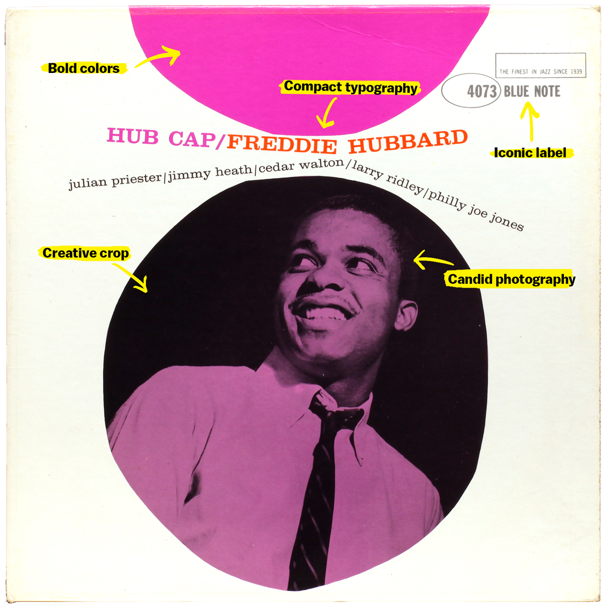

Moodboard of the style Blue Note
The assignment
To make a moodboard, considering the characteristics of our given style. Since the name of the style is largely associated with the recording company Blue Note Records and especially with the album covers that Reed Miles created for the company, I made my moodboard in the style of these covers.
So what does a Blue Note album cover look like?
Here is an example with the main features.
A brief info about the Blue Note style.
Blue Note Records is an American jazz record label that is owned by Universal Music Group and operated with Decca Records. Established in 1939 by Alfred Lion and Max Margulis, it derives its name from the blue notes of jazz and the blues. Originally dedicated to recording traditional jazz and small group swing, from 1947 the label began to switch its attention to modern jazz.
During its heyday, the 1950s and 1960s, the photography and graphic art of Reid Miles created a series of iconic album covers, often incorporating session photos by Wolff, which added to Blue Note’s artistic reputation.